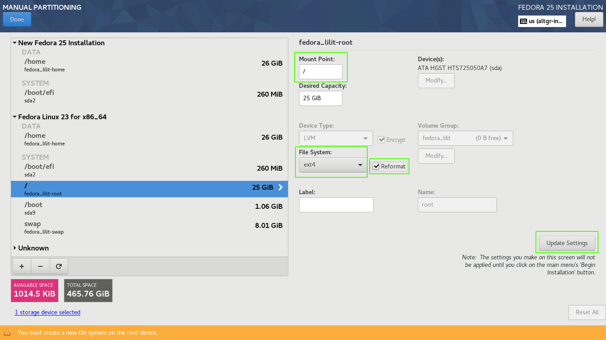

Previously I had updated my laptop from Fedora 22 to Fedora 23 when F22 had more than 6 months since it reached its End of Life, it is also possible reuse partitions created for F22 so that they can be used to install the new Fedora release and keep all the files contained in the Logical Volume that serves as /home.
In this post I will explain how to achieve this without compromising the integrity of our information or the other operating systems installed in our Desktop/Laptop.
As we saw in the previous post, it is possible to make an upgrade, this is great to have the ability to do this, but the idea of downloading all packages, and then updating them at once, is something I do not know if I want do, frankly, doing fresh installs and setting everything to as it was before is something I like and enjoy doing. It also represents less burden for the computer, since it only downloads the minimum packages to have a functional system, anything else I may need can be later installed on demand.
Once all the files contained in our systems have a proper backup, we can begin with the installation process without the fear of something going wrong, you never know what could go wrong until it goes wrong XD.
Creating an Installation Media
The first step is to create an installation medium, for this we must download the Fedora 25 ISO file. Since Fedora 21 I have been using the netinstall image, according to Chapter 2 of the Fedora Installation Guide:
The netinstall image boots directly into the installation environment, and uses the online Fedora package repositories as the installation source. With a netinstall image, you can select a wide variety of packages to create a customized installation of Fedora.
The Fedora Server netinstall image is a universal one, and can be used to install any Fedora flavor or your own set of favorite packages.
Downloading the image Everything netinstall
I'd rather use the netinstall ISO image of Fedora Everything.
Apparently, the Everything netinstall image does not have a torrent seeder for download:
https://torrent.fedoraproject.org/
So we must use the conventional method of direct download, for this we will make use of the command line.
To download the image for 32bit systems use the following command:
wget -N -t 0 -c https://download.fedoraproject.org/pub/fedora/linux/releases/25/Everything/i386/iso/Fedora-Everything-netinst-i386-25-1.3.iso
To download the image for 64bit systems use the following command:
wget -N -t 0 -c https://download.fedoraproject.org/pub/fedora/linux/releases/25/Everything/x86_64/iso/Fedora-Everything-netinst-x86_64-25-1.3.iso
Where:
-N downloads the file with the same time and date stamp when it was first uploaded to the servers.
-t 0 in case the download is interrupted due to problems of connection this will attempt to make an automatic reconnection, if we leave the time in 0 will reconnect immediately.
-c indicates that the download must be continued in the byte that was left pending when the donwload was interrupted.
This is a small contingency measure in case we do not have access to a network stable enough.
we can also verify the integrity of the downloaded image using the checksum file. we only have to download the file and save it in the same directory containing the ISO image:
wget -N -t 0 -c https://alt.fedoraproject.org/es/static/checksums/Fedora-Everything-25-1.3-x86_64-CHECKSUM
Then we execute the following command:
sha256sum -c Fedora-Everything-25-1.3-x86_64-CHECKSUM
Writing the ISO image on a USB
To burn the ISO image to an USB drive we will use the Fedora Media Writer tool. If you are using Windows you can install Fedora Media Writer using the next link:
https://getfedora.org/fmw/FedoraMediaWriter-win32-4.0.7.exe
For MacOS:
https://getfedora.org/fmw/FedoraMediaWriter-osx-4.0.7.dmg
If you are using Fedora 23 or higher you can install Fedora Media Writer with following command:
su -c 'dnf install mediawriter'
Before running Fedora Media Writer it is advisable to disconnect any removable storage device that may be plugged in our system, this to avoid possible confusion. Then we connect the USB memory that we will use and until then run Fedora Media Writer.
The steps to follow are very simple, we select:
- Custom image.
- Navigate to the directory where the ISO image was previously downloaded.
- Select the USB.
- Click Write to disk.
- Enter your user password if you are in the wheel group or the root password in case we are not in the admins group.
- Done.
Booting from USB
In my case I have configured my laptop to start in UEFI mode and with Secure Boot enabled.
Creating our installation media with Fedora Media Writer guarantees that the installation medium will work in any possible scenario.
To access the Boot Manager on my laptop, I only need to press the Enter key while the Lenovo logo is displayed, this is a indicator, in my case, that the machine is booting in UEFI mode.
Starting the Fedora 25 Installation Process
For this section of the post I will use screenshots and a brief description of them.
First, the Internet connection.
Installation media created from netinstall images depends exclusively on an Internet connection, either wired via RJ45 port (Ethernet) or via Wireless (Using our WiFi card), in my case the netinstall setup detects both network cards. Fedora netinstall contain a set of drivers that allow us to make use of certain network cards, in case our network card is not detected it might be due to our device is not supported by Fedora, this is for legal reasons. Fedora only includes FLOSS drivers or that its manufacturers make explicit mention of its terms of use and distribution policy.
My T440p comes equipped with an Intel® Ethernet Wired Network Card Connection I217-LM and an Intel® Wireless-N 7260 Wireless Network Card, both cards were detected during installation, in the office I only have access to WiFi networks so I used the Wireless card.
In this first image of the installation summary, the first thing we must do is to get connected to any of the available networks whether we use a Wired network or WiFi network, for this we click on the NETWORK & HOST NAME.
Then selecting Wireless and activating the card; we select one Network of those available; we change the name of our Desktop/Laptop and click Apply...
Click Done.
In the LOCALIZATION section I added the French (International (AltGr dead keys) and removed English (US).

You can see a short test, when by pressing the AltGr + a key and other vowels, the result is accentuated vowels.
In the TIME & DATE section I always enable Network Time...
We also select our Region and City, based on this, the time and date are set.
Up to now we have configured the following sections:

Now we must configure the SOFTWARE section, specifically INSTALLATION SOURCE...
In this section we mark On the Network: and select Closest mirror, we also make sure to uncheck the Updates option...

This way the installer will use the online repositories to download the required packages for the installation, using the nearest server that commonly is not the closest geographically, but the most efficient and with better times in terms of data transfer.
By unchecking Updates we are telling the installer to use the latest packages that are available in the repo.
We wait for the package group metadata to be downloaded, the section SOFTWARE SELECTION depends on this:

In SOFTWARE SELECTION I chose Fedora Custom Operating System, which represents a very minimal package selection, with no graphical environment, only a few packages groups as follows:
Environment Group: Fedora Custom Operating System
Environment-Id: custom-environment
Description: Basic building block for a custom Fedora system.
Mandatory Groups:
Core
Optional Groups:
Guest Agents
Standard
Finally we have reached the SYSTEM section, select INSTALLATION DESTINATION. In Device Selection, in Local Stardard Disk select the hard disk that has the Fedora installation with the existing partitions we want to reuse.
In the Other Storage Options section, under Partitioning we select I will Configure partitioning.
The following menu is shown below, in which we will click on Unknown:
Once we click Unknown the other existing partitions will be displayed. we will focus on the partitions sda2, sda9 and sda10:

Where:
sda2 is the ESP (EFI Partition System) partition, this partition contains the other *.efi files; every OS that has been installed on our computer in UEFI mode has an *.efi file that will be linked to our GRUB, which allows us to choose which OS to boot during the first few seconds after our computer is turned on. You should never mark this partition to be formatted. sda2 will be mounted on /boot/efi.
sda9 is the partition I will mount in /boot, this partition should not be encrypted, since inside there are files needed for the OS to be loaded, in example the kernel. If we encrypt this partition we will not be able to load the kernels on boot.
sda10 is the partition that was encrypted using LUKS, which contains the Volume Group which contains the other logical volumes that serve as /, /home and swap.
After selecting sda10 you are prompted for the encryption password that will grant you access to the Volume Group containing the mentioned partitions. It is shown as the existing Fedora 23 installation, which was originally the F22 that we updated in the previous post.
We click on Fedora Linux 23 for x86_64 and we can see the logical volumes that we will reuse.
By clicking /home, we make sure to assign a Mount Point for this Logical Volumen. We make sure that the Reformat checkbox is not checked, and click on Update Settings.

In the following image we can see that the logical volume fedora_lilit-home was reassigned to New Fedora 25 Installation.

We select /boot/efi, which is nothing more than the ESP partition located in sda2, we make sure to assign a Mount Point for this Logical Volume, which in this case would be /boot/efi. we make sure that the checkbox Reformat is not checked, and click on Update Settings.

We select /, this logical volume served as / for F23, so to be able to reuse it we must mark it to format. we assign / as the point, I assign a file system ext4, we ensure that the checkbox Reformat is marked, and click on Update Settings.
Select swap, mark the checkbox and click Update Settings.
We select /boot, here is where the F23 kernels were stored, so to reuse this partition it is required to format it. we assign a Mount Point /boot, then click Reformat, in my case I assign an ext4 file system and click Update Settings.

Click on Done and accept the changes that will be made.
To finish just click on Begin Installation.
We assign a user password and ROOT password. And wait, now we must wait for the download of the packages and their installation to finish:

After done, click Reboot.
In my case I had to do a series of steps after the installation that the we will see in the next post.